HIST 270 · History of China · Chapter 12 · Lecture 3
Displaced Elites and the Collapse of Yuan Rule
Scholars Found New Roles under the Mongols, and Floods, Money and Rebels Brought the Dynasty Down
1279–1368 · Loyalists, exams, drama, painting and decline · Study Buddy edition
After Qian Xuan, Ode on Returning Home, handscroll, 14th–15th century, a close copy of a composition by Qian Xuan. The Metropolitan Museum of Art, 13.220.124. Public domain.
The puzzle · One life, 1269–1354
Huang Gongwang Was a Clerk, a Prisoner, a Daoist and a Painter
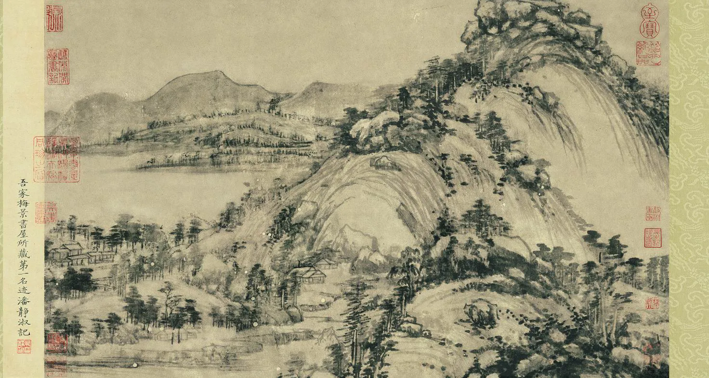
Huang Gongwang, Dwelling in the Fuchun Mountains, opening section known as The Remaining Mountain, 1347–1350. Zhejiang Provincial Museum. Public domain, Wikimedia Commons.
No exams. Huang grew up in the south after 1279, when the regular examinations that had made officials were gone.
A clerk's career. He worked as a clerk, and around 1315 he was jailed when his superior fell in a corruption case.
A new life. Afterward he joined a Daoist order, told fortunes, taught and painted.
A masterpiece. In his late seventies he painted a long scroll for a Daoist friend, finishing around 1350.
The puzzle: how did educated men build lives when the usual road to office narrowed, and what else helped drama and painting thrive?
How to use this deck
Five Story Blocks, Five Review Questions, and the Same Tools as Before
Q6Scholars without careers: loyalists, new jobs and Zhao Mengfu.
Q7The examinations return in 1315, with quotas for each group.
Q9Drama on the stage and on the page.
Q10Painting among southern scholars.
Q11Court quarrels, money, floods and rebels end Yuan rule.
Each block ends with a Your Turn slide for its Review Question.
Press S for the Study Buddy notes, and click any image, or Tab to it and press Enter, to see it full size.
Click a teal dotted word for a quick definition, and press Esc to close it.
Move with the arrow keys or Space, and press Esc for a map of all the slides.
×
Literati (shi)
The literati were men educated in the Confucian classics, history and poetry. Under the Song, the examinations turned many of them into officials, and the rest still shared the same education and values.
Being literati was about learning and status, not only about holding office. That is why a man could stay literati even when he had no job in government.
Popups like this one close with Esc, the × mark, or a click outside the card.
Q6 story · The closed door
The Conquest Took Away the Path from Study to Office
1274 to 1315
Southern Song held its last examination in 1274, and the Yuan held no regular one until 1315, a gap of forty years.
Shared posts. The Yuan staffed its government with Mongols, semu and northern Chinese, so fewer posts were open to southern scholars.
Other ways in. Many officials entered through family privilege, recommendation or clerical service rather than the civil service examinations.
Few in the realm study the Confucian classics, and many who obtain office do so as clerks of the brush.Advisers to Khubilai in 1284, as recorded in the examination treatise of the Yuan shi, ch. 81. Translated for this deck.
Lost status. For Song families, office had been the proof of success. Without it, a scholar had to find a new answer to the question "What am I for?"
Not everyone suffered. Many southern landlords kept their land and wealth, and taxes in the south were often light. The loss was mainly one of careers and prestige.
×
Semu ren
You met this label in Lecture 2. Semu ("various kinds") covered peoples who were neither Mongol nor Chinese, such as Uyghurs, Tanguts, Persians and Arabs.
Semu officials held many posts in finance and administration, which is one reason fewer posts were open to Chinese scholars.
Q6 story · Refusing to serve
Some Scholars Stayed Loyal to the Fallen Song and Refused Yuan Office
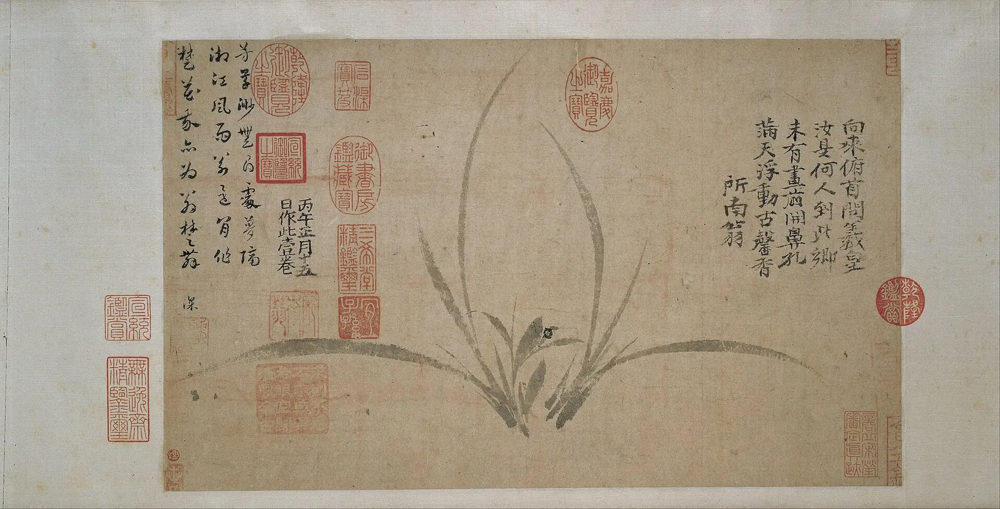
Zheng Sixiao, Orchid, dated 1306, ink on paper. Osaka City Museum of Fine Arts. Public domain, Wikimedia Commons.
About the story. The famous explanation of the missing soil comes from later writers, not from Zheng's own inscription.
Zheng Sixiao. Zheng painted orchids without soil, and later writers said the land had been stolen by foreigners.
Xie Fangde. Xie refused repeated offers of office, and when he was taken to Dadu in 1289 he starved himself to death.
Wen Tianxiang. Wen was executed in 1283 after refusing to serve. His prison poem, the Song of the Righteous Spirit, made him a lasting model of loyalty.
Heaven and Earth have a righteous spirit; mixed and scattered, it takes on many forms.Wen Tianxiang, opening lines of the Song of the Righteous Spirit, written in prison in Dadu, 1281. Translated for this deck.
×
The rootless orchid
The orchid was an old symbol of a pure and loyal gentleman. Zheng Sixiao (1241–1318) painted it with no earth around the roots.
Later writers reported that when asked why, he answered that the land had been taken by foreigners. Other stories say he always sat facing south, toward the lost Song. These are reports written after his death, so treat them as part of his legend.
Q6 story · New ways to live
Educated Men Became Teachers, Clerks, Doctors, Monks and Writers
Teaching
Many scholars taught in family schools, local schools and private academies, where they kept Neo-Confucian learning alive.
Clerks
Some took clerical jobs in Yuan offices. The work paid and could lead to minor posts, but scholars had long looked down on it.
Medicine
Medicine became an honorable choice for "Confucian doctors." Zhu Zhenheng studied Neo-Confucianism and then became a famous physician.
Religion
Others joined Daoist or Buddhist orders, which the Yuan favored and which gave a life outside government.
Writing and art
Some wrote plays, songs and stories, and others painted for friends or sold their work.
Private life
Men with land could live as gentlemen at home, writing poetry and leading their local communities.
×
Academies (shuyuan)
Shuyuan were schools, often in quiet places, where scholars studied and taught the classics. Zhu Xi had made them central to Neo-Confucian learning in the Song.
The Yuan government recognized and supported many academies and appointed teachers to them. Those teaching posts gave scholars a modest income and a respected role.
Q6 story · The collaborator debate · 1286–1322
Zhao Mengfu Served the Mongols, and Critics Still Argued about Him Centuries Later
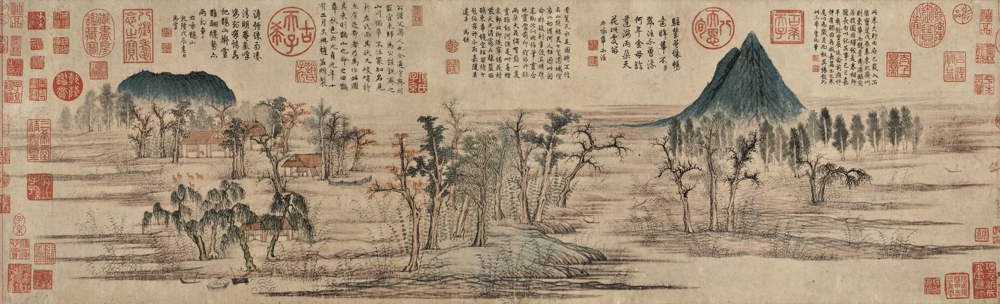
Zhao Mengfu, Autumn Colors on the Qiao and Hua Mountains, 1295, painted for his friend Zhou Mi. National Palace Museum, Taipei. Public domain, Wikimedia Commons.
Recruited. In 1286 a Yuan envoy brought Zhao, a Song royal descendant, to Khubilai's court, and he rose to high office.
Useful at court. Biographies say he helped bring down the hated minister Sangha in 1291.
In the mountains it is called ‘far ambition’; out of the mountains it is just ‘little grass.’Zhao Mengfu, from his poem "My Fault Was Coming Out." The line puns on the names of one medicinal herb. Translated for this deck.
Your Turn · Review Question 6
Review Question 6
The Disenfranchisement of the Educated Elite
How did the Mongol conquest disrupt the traditional roles and political dominance of the Chinese educated elite, and what alternative paths did these scholars pursue?
Use the stories you just studied, then check your reading for the passage that answers this question.
A clerk turned painterLoyalistsServing the Yuan
Q7 story · The exams return · 1313–1315
Emperor Renzong Restored the Examinations and Made Zhu Xi's Commentaries the Standard
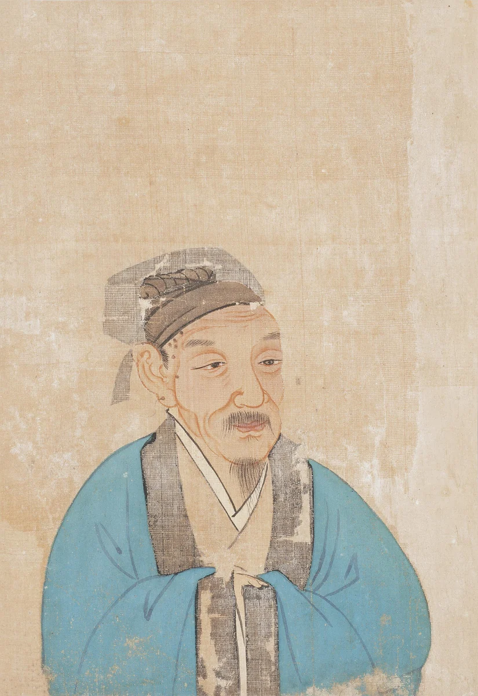
Zhu Xi (1130–1200), from an album of Portraits of Famous Men, painted centuries after his death. Philadelphia Museum of Art. Public domain, Wikimedia Commons.
A ruler with Chinese teachers. Ayurbarwada, known as Renzong (r. 1311–1320), had studied with Chinese tutors and favored Confucian advisers.
The edict. In the eleventh lunar month of 1313, Renzong issued the restoration edict, setting provincial exams for 1314 and metropolitan exams for 1315.
One school of thought. All candidates had to answer on the Four Books using Zhu Xi's commentaries.
In selecting men, virtuous conduct should come first; in testing their skills, the classics come first and literary composition second. Flowery words beyond substance We do not want.Renzong's restoration edict of the eleventh lunar month of 1313, in the examination treatise of the Yuan shi, ch. 81. Translated for this deck.
×
Zhu Xi and the Four Books
Zhu Xi was the great Neo-Confucian thinker of the Southern Song. He grouped four short texts, the Great Learning, the Analects, the Mencius and the Doctrine of the Mean, as the Four Books and wrote commentaries on them.
The 1313 rules made his commentaries required for every candidate. Ming and Qing exams kept that rule until the exams ended in 1905.
Q7 story · Quotas and separate tracks
The New Exams Gave Each of the Four Groups the Same Number of Places
Essential: equal shares for unequal groups
75 each
Provincial exams sent 300 men to the capital: 75 Mongols, 75 semu, 75 Hanren and 75 Nanren.
25 each
The capital exam was to pass 100 men, 25 from each group, listed on two separate lists.
Unequal requirements. Mongols and semu sat two sessions with shorter answers, while Hanren and Nanren sat three harder ones.
Unequal populations. The Nanren were by far the largest group but had the same quota as the small Mongol and semu groups.
Supporting evidence: only 56 men received the jinshi in 1315, and the full quota of 100 was first reached in 1333. About 1,100 men earned the degree in the 16 exams held between 1315 and 1366, and Bayan halted the exams from 1335 until the 1340s.
×
The right and left lists
Successful candidates were posted on two lists. The right list, the more honored side, held Mongols and semu. The left list held Hanren and Nanren.
Each list had its own top graduate, so the Yuan named two "first-place" winners in a single exam.
Your Turn · Review Question 7
Review Question 7
The Re-institution of the Civil Service Exams
Evaluate the Mongols' re-institution of the civil service examinations in 1315. How did the examination's strict quota systems reflect the broader political and social hierarchies of the Yuan Dynasty?
Use the stories you just studied, then check your reading for the passage that answers this question.
Forty years without examsZhu Xi as the standardSoutherners at court
Q9 story · A new kind of theater
Zaju Drama Filled City Stages, and Scholars Began Writing the Scripts
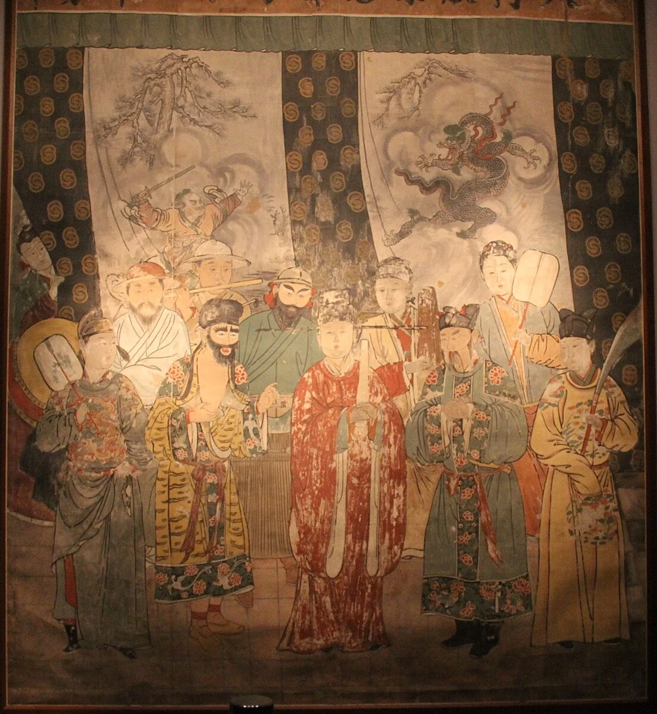
The 1324 actors mural of the Guangsheng Temple, Hongtong, Shanxi, as displayed in the Shanxi Museum, most likely as a copy. Photo: Gary Lee Todd, CC0, Wikimedia Commons.
The form. A zaju play usually had four acts, with songs set to popular tunes and one lead singer.
The stage. Troupes played in city theaters and at temple festivals, and many star performers were women.
The writers. Some educated men formed writing clubs and sold scripts to troupes, and the scripts began to circulate as texts.
A record. In 1330 Zhong Sicheng listed the playwrights he knew in his Register of Ghosts.
×
Zaju ("variety plays")
Zaju grew out of earlier Song and Jin entertainments. By the Yuan it had a fixed form: four acts, each built on a suite of songs in one musical mode, with spoken dialogue between.
Only the lead role sang. That role could be male or female, so a famous actress might carry a whole play.
Q9 story · Two famous plays
Guan Hanqing Wrote of Injustice, and Wang Shifu Wrote of Love
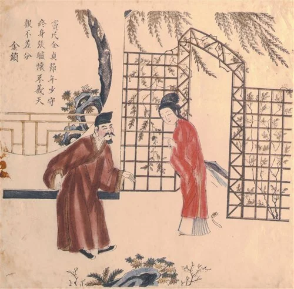
Dou E and Donkey Zhang, color woodblock print, 17th to early 18th century, long after the play was written. Chester Beatty, Dublin. Public domain, Wikimedia Commons.
Earth, you cannot tell good from bad: how can you be Earth? Heaven, you mistake the wise for fools: you are Heaven in name only!Dou E, before her execution, in Guan Hanqing's Injustice to Dou E, Act 3, as printed in a Ming edition. Translated for this deck.
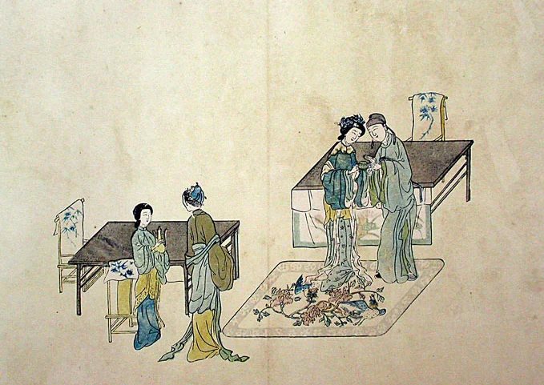
Illustration to The Story of the Western Chamber, color woodblock print published by Min Qiji, 1640. Museum für Ostasiatische Kunst, Cologne. Public domain, Wikimedia Commons.
Love against the rules. In Wang Shifu's play, the student Zhang and Cui Yingying fall in love and meet in secret, helped by the clever maid Hongniang.
About the texts. Most Yuan plays survive in Ming editions that editors revised, so exact wording may not be Yuan.
Your Turn · Review Question 9
Review Question 9
The Golden Age of Yuan Drama
What political and social factors contributed to the flourishing of dramatic arts during the Yuan Dynasty, and how did literati playwrights utilize this medium?
Use the stories you just studied, then check your reading for the passage that answers this question.
Troupes on stageInjustice to Dou EThe Western Chamber
Q10 story · Painting for oneself and one's friends
Southern Scholars Turned Painting into Personal Expression for Friends
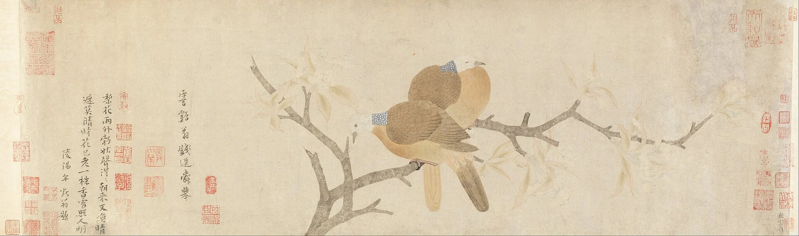
Qian Xuan, Doves and Pear Blossoms after Rain, handscroll with the painter's own poem, late 13th century. Cincinnati Art Museum. Public domain, Wikimedia Commons.
Qian Xuan. Qian (c. 1235–before 1307), a southern scholar, is reported never to have served the Yuan and to have lived partly by selling his paintings.
Looking back. Qian and Zhao Mengfu revived older styles from the Tang and Five Dynasties instead of copying the Song court painters.
Words and image.Literati painters wrote poems on their paintings, joining poetry, calligraphy and painting.
Rocks like ‘flying white,’ trees like seal script: to paint bamboo, you must master the eight strokes of writing.Zhao Mengfu, poem on his own painting Elegant Rocks and Sparse Trees. Translated for this deck.
×
Literati painting (wenrenhua)
Literati painting emphasized scholarly identity, expressive brushwork, and exchange among friends. Its ideal contrasted with professional craftsmanship, although in practice some literati sold paintings or served at court.
The ideal went back to Song scholars such as Su Shi. Literati painters often joined the "three perfections" of poetry, calligraphy and painting on one scroll.
Q10 story · Two of the Four Masters
Huang Gongwang and Wu Zhen Painted from Lives Spent Outside Government
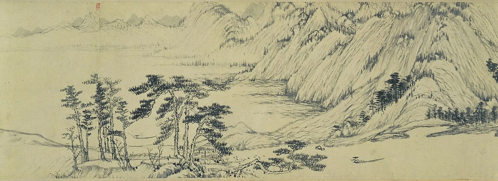
Huang Gongwang, Dwelling in the Fuchun Mountains, detail of the main section, 1347–1350. National Palace Museum, Taipei. Public domain, Wikimedia Commons.
Huang Gongwang (1269–1354). His long scroll of the Fuchun River unrolls hills built from soft, dry, repeated brushstrokes, painted bit by bit over about three years.
Wu Zhen (1280–1354). Wu lived quietly near Jiaxing, reportedly telling fortunes, and painted bamboo, fishermen and landscapes with poems of his own.
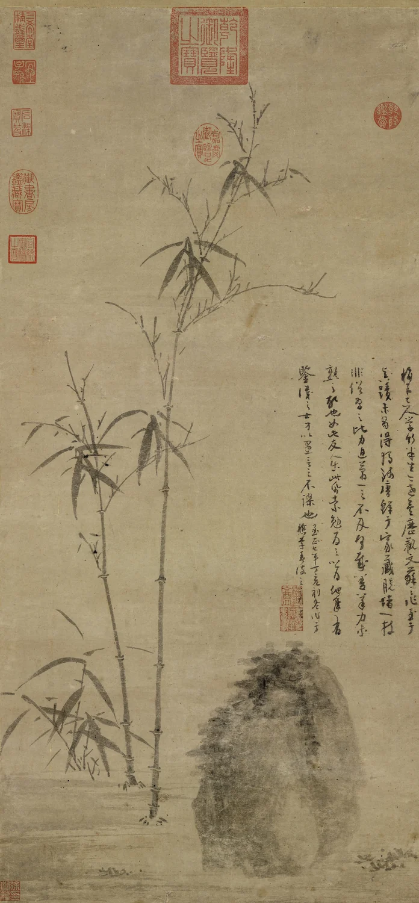
Wu Zhen, Stalks of Bamboo by a Rock, 1347. National Palace Museum, Taipei. Public domain, Wikimedia Commons.
Q10 story · The other two masters
Ni Zan Painted Empty Shores, and Wang Meng Painted Crowded Mountains
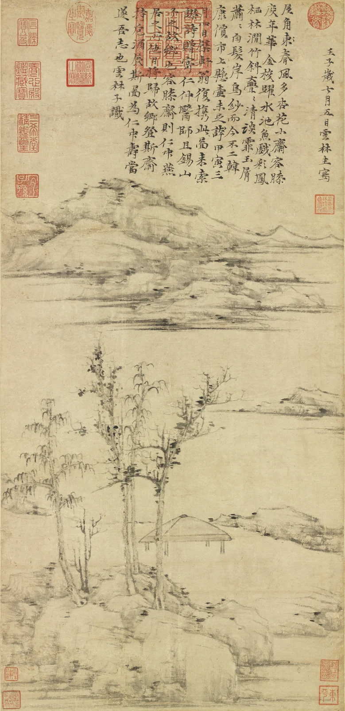
Ni Zan, The Rongxi Studio, 1372. National Palace Museum, Taipei. Public domain, Commons.
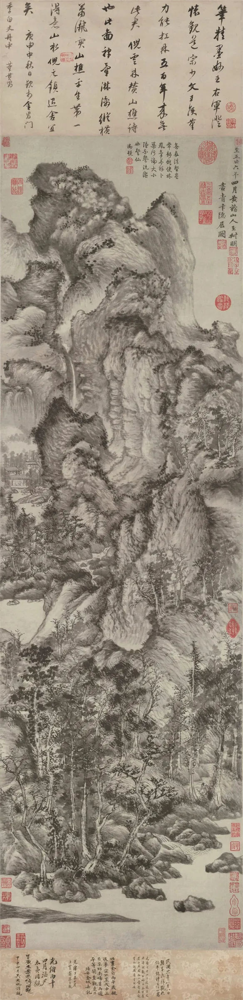
Wang Meng, Dwelling in the Qingbian Mountains, 1366. Shanghai Museum. Public domain, Commons.
Ni Zan (1301–1374). A rich landowner, Ni gave away much of his property in the 1350s and spent years traveling by boat around Lake Tai.
What I call painting is no more than a few careless strokes. I do not seek likeness; I paint only to amuse myself.Ni Zan, letter to a friend. Translated for this deck.
Wang Meng (c. 1308–1385). Zhao Mengfu's grandson painted dense, restless mountains, and he later died in a Ming prison.
Read with care. Political readings of these paintings are interpretations. The paintings rarely say so themselves.
Your Turn · Review Question 10
Review Question 10
Literati Painting as Political Expression
How did the art of painting evolve among the southern literati during the Mongol era, and how was it used to cope with political disenfranchisement?
Use the stories you just studied, then check your reading for the passage that answers this question.
Poem and imageHuang GongwangNi Zan
Q11 story · Political instability · 1307–1340
Feuds over the Throne Weakened the Court in Dadu
9 rulers in 26 years
Between 1307 and 1333, nine men held the Yuan throne, several only briefly.
1323Emperor Shidebala is assassinated by court rivals.
1328The War of the Two Capitals divides the court and its armies.
1333Toghon Temür, aged 13, takes the throne and reigns until 1370.
1335The chief minister Bayan halts the exams and purges rivals.
1340Bayan's nephew Toghto ousts him and launches reforms.
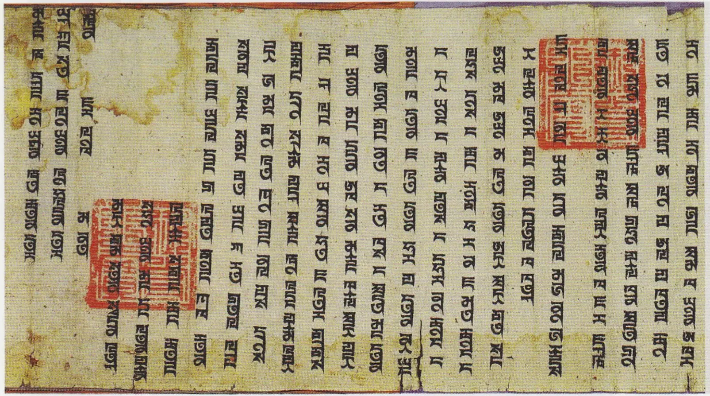
Edict issued in the name of Toghon Temür from Dadu, 1362, in Mongolian written in Phags-pa script. Public domain, Wikimedia Commons.
×
The War of the Two Capitals (1328)
When Emperor Yesün Temür died at the summer capital Shangdu, his supporters there enthroned his young son. In Dadu, the general El Temür backed a rival prince, Tugh Temür.
The two sides fought for about two months, and Dadu won. In 1329 Tugh Temür's elder brother Khoshila arrived to claim the throne and died suddenly days after meeting him. Many at the time suspected poison.
Q11 story · Economic mismanagement · 1350s
The Court Printed More and More Paper Money, and Prices Soared
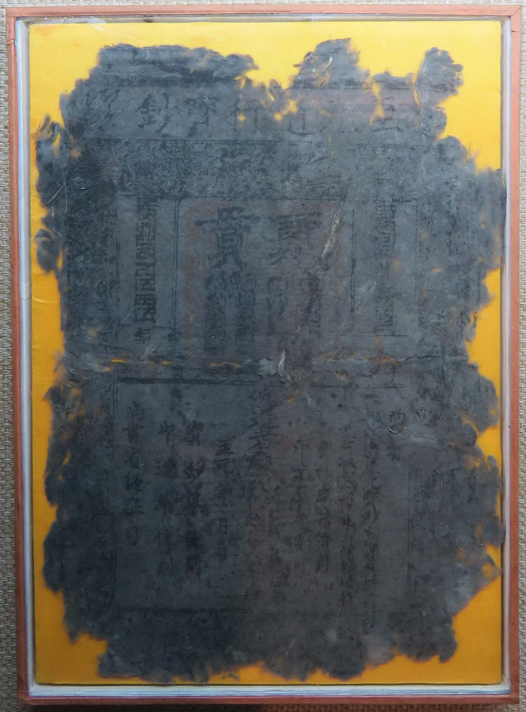
Yuan paper note of the Zhiyuan series, first issued in 1287 and still in use in later decades. Museum of Inner Mongolia University. Photo: BabelStone, CC BY-SA 3.0, Wikimedia Commons.
A paper system. The Yuan had made paper money the main currency, as Lecture 2 showed, and it worked for decades.
The main driver. Civil war raised military spending while shrinking the revenue base, which pushed the government to print more money.
Other costs. Earlier gifts to princes and temple building had already strained the treasury.
A failed fix. In 1350 Toghto's government issued new notes and copper coins, but soon prices soared.
Before long, prices leapt more than tenfold. In the capital, ten ingots of paper notes could not buy a peck of grain.Treatise on economics of the Yuan shi, ch. 97, compiled by Ming scholars. Translated for this deck.
Q11 story · Environmental crisis · 1344–1351
The Yellow River Broke Its Dikes, and the Repair Gathered a Huge Labor Force
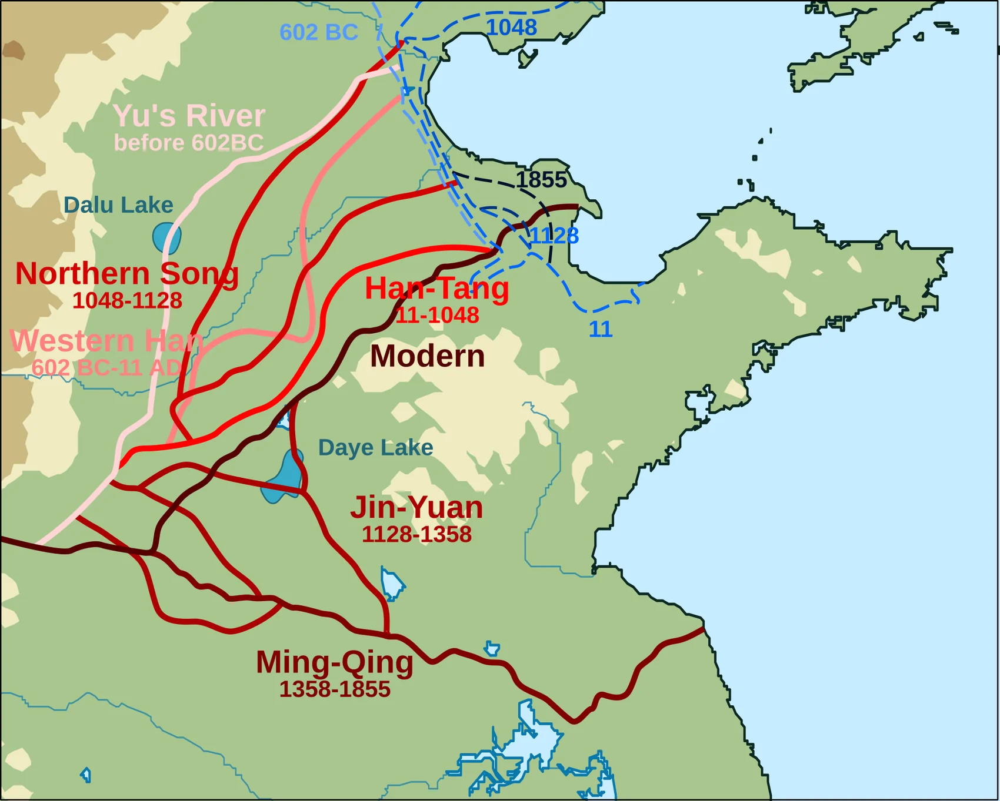
Changing courses of the Yellow River over the centuries, a modern map. Stevenliuyi and Esiymbro, CC BY-SA 4.0, Wikimedia Commons.
Heavy rain fell for more than twenty days. The Yellow River overflowed, the water stood about two zhang deep on level ground, and it broke through the Baimao dike to the north.River treatise of the Yuan shi, ch. 66, on the 5th month of 1344. Translated for this deck.
A disaster zone. Floods spread across western Shandong and threatened the Grand Canal and the salt works that paid for the state.
The repair. In 1351 Jia Lu was given 150,000 laborers and 20,000 soldiers to force the river back into its old bed.
Success and danger. The work finished within the year, but it gathered many hungry men in one region.
Q11 story · Rebellion · 1351–1360s
The Red Turbans Rose, and Rival Warlords Divided Central and South China
A religious spark. In 1351 Han Shantong and Liu Futong led a rising that preached the coming of Maitreya, the future Buddha.
A Song revival. The rebels wore red headcloths and claimed Han Shantong descended from the Song emperors.
Do not say the stone man has only one eye; once he stirs the Yellow River, the realm will rebel.Rhyme that later writers said was spread before a one-eyed stone figure was "found" by the river workers in 1351. Translated for this deck.
Warlords. Others carved out their own states, among them Zhang Shicheng, a salt trader, Fang Guozhen, a sea raider, and Chen Youliang.
A lost chance. In 1354 Toghto was besieging Zhang Shicheng at Gaoyou when rivals at court had him dismissed, and his army broke up.
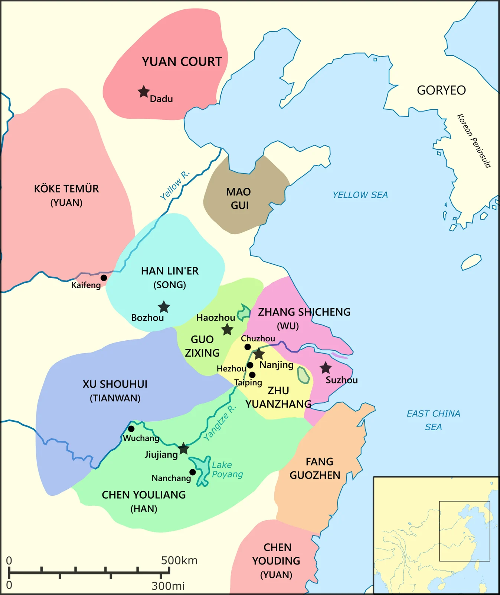
Regional powers during the Red Turban rebellions, 1350–1360, a modern map. Joko2468, CC0, Wikimedia Commons.
×
Maitreya and the White Lotus
Maitreya is the Buddha of the future. Some popular Buddhist groups, often linked with the White Lotus tradition, taught that his arrival would end a corrupt age and bring a world of peace.
The Red Turbans mixed this hope with Manichaean ideas of a "Prince of Light" and with loyalty to the Song. The Yuan had banned such groups, which made them natural centers of resistance.
Q11 story · From orphan to emperor · 1328–1368
Zhu Yuanzhang Rose from a Poor Orphan to Found the Ming
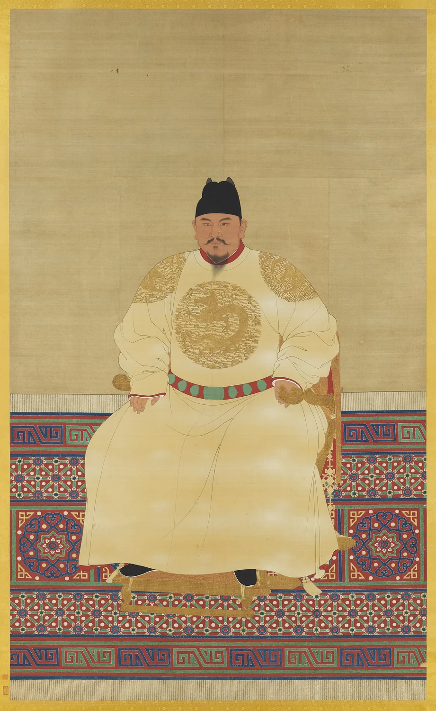
Seated portrait of Emperor Taizu (Zhu Yuanzhang), Ming dynasty. National Palace Museum, Taipei. Public domain, Wikimedia Commons.
1344Famine and disease kill most of Zhu's family, and he enters a Buddhist temple as a novice.
1352He joins a Red Turban army under Guo Zixing at Haozhou.
1356He captures Nanjing and makes it his base.
1363He defeats Chen Youliang in a great battle on Poyang Lake.
1367He defeats Zhang Shicheng at Suzhou.
1368He proclaims the Ming dynasty, his general Xu Da takes Dadu, and Toghon Temür flees north.
Your Turn · Review Question 11
Review Question 11
The Decline of the Yuan Dynasty
What combination of economic mismanagement, political instability, and environmental crises contributed to the ultimate collapse of the Mongol administration in China?
Use the stories you just studied, then check your reading for the passage that answers this question.
Paper moneyThe Yellow RiverRebels and warlords
Coming next · The Ming
Dadu Fell in 1368, but Yuan Exams, Plays and Paintings Lived On under the Ming
Ni Zan, The Rongxi Studio, painted in 1372, four years into the Ming. National Palace Museum, Taipei. Public domain, Wikimedia Commons.
Exams. The Ming kept Zhu Xi's commentaries as the exam standard, and Ming and Qing exams kept them until 1905.
Drama. Ming editors collected and revised Yuan plays, which is how most of them reached us.
Painting. Ming critics named the Four Masters of the Yuan, and later painters copied them for centuries.
A new founder. Zhu Yuanzhang built a strong, centralized throne at Nanjing, and many scholars found that serving it was dangerous too.
Carry this question forward: what did the Ming founder learn from the Yuan collapse, and how did it shape his new state?
Sources and image credits
The Stories in This Deck Rest on These Sources
Your textbook
Patricia Buckley Ebrey, A History of China, Chapter 12, "China Under Mongol Rule (1215–1368)."
Primary sources (quoted)
Yuan shi (History of the Yuan), compiled 1369–1370 under Song Lian: river treatise (ch. 66), examination treatise with the 1284 debate and the 1313 edict (ch. 81), economic treatise on paper money (ch. 97). Translations made for this deck from the Chinese text on Wikisource.
Wen Tianxiang, Song of the Righteous Spirit, 1281. Zhao Mengfu, "My Fault Was Coming Out" and his poem on Elegant Rocks and Sparse Trees. Ni Zan, letter to Zhang Zaozhong. Translated for this deck.
Guan Hanqing, Injustice to Dou E, Act 3, in Zang Maoxun's Ming collection Yuanqu xuan (1615–1616). Translated for this deck.
Further reading beyond Ebrey
John W. Dardess, Conquerors and Confucians: Aspects of Political Change in Late Yüan China (Columbia, 1973).
Frederick W. Mote, Imperial China 900–1800 (Harvard, 1999).
Herbert Franke and Denis Twitchett, eds., The Cambridge History of China, vol. 6 (1994).
Benjamin A. Elman, A Cultural History of Civil Examinations in Late Imperial China (California, 2000).
Wilt L. Idema and Stephen H. West, Chinese Theater 1100–1450: A Source Book (Steiner, 1982).
James Cahill, Hills Beyond a River: Chinese Painting of the Yüan Dynasty (Weatherhill, 1976).
Jennifer W. Jay, A Change in Dynasties: Loyalism in Thirteenth-Century China (Western Washington, 1991).
Timothy Brook, The Troubled Empire: China in the Yuan and Ming Dynasties (Harvard, 2010).
Frederick W. Mote, "The rise of the Ming dynasty," in The Cambridge History of China, vol. 7 (1988).
Images
All images in this deck are real historical objects or modern maps: The Metropolitan Museum of Art; National Palace Museum, Taipei; Zhejiang Provincial Museum; Osaka City Museum of Fine Arts; Shanghai Museum; Cincinnati Art Museum; Philadelphia Museum of Art; Chester Beatty; Museum für Ostasiatische Kunst, Cologne; photos and maps by Gary Lee Todd (CC0), BabelStone, Stevenliuyi and Esiymbro, Joko2468 and others. Full credits sit in each caption.